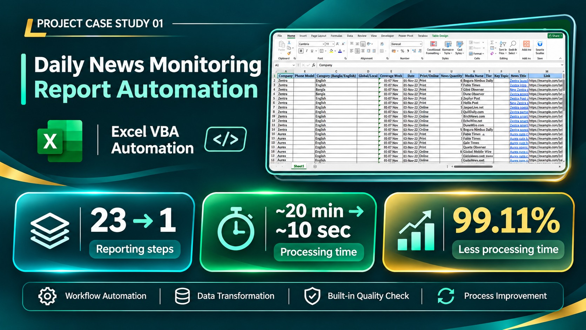
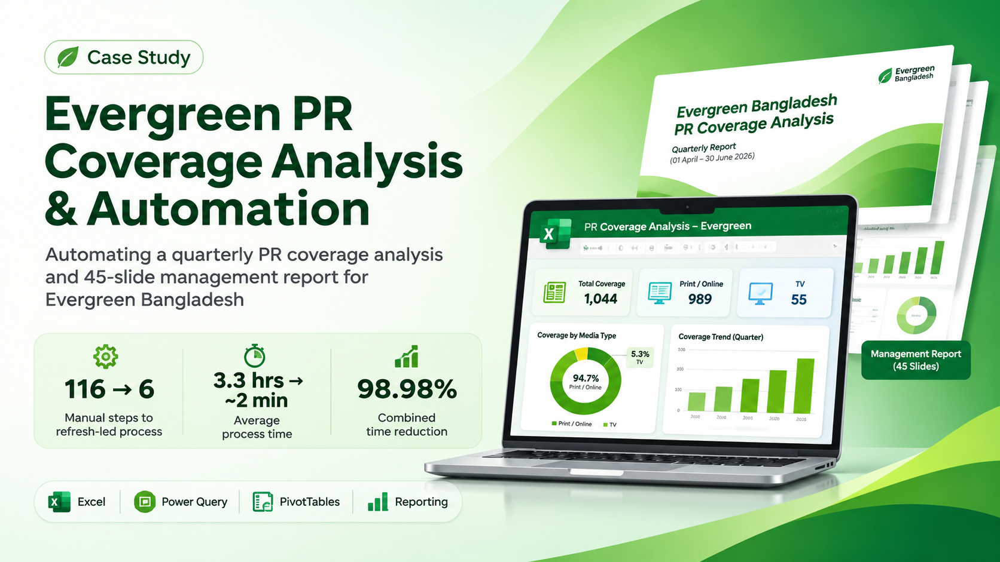

Automation Projects
Workflow automation, reporting systems, and repeatable data processes.

View project details ↗Automation project01
Daily News Monitoring Report Automation
An Excel/VBA workflow that converts a raw news-monitoring export into a structured client-ready report, reducing repetitive formatting and quality-control work.
Excel · VBA · Data validation
 View project details ↗
View project details ↗Automation project02
Multi-client Ads Alerts Automation
A Power Query, Power Pivot, and VBA workflow that prepares separate advertising-alert outputs for multiple clients.
Excel · Power Query · Power Pivot · VBA

View project details ↗Automation project03
Evergreen PR Coverage Analysis & Automation
An Excel and Power Query workflow that integrates PR coverage datasets, prepares reusable analysis views, and supports a 45-slide quarterly management report.
Excel · Power Query · PivotTables · PowerPoint